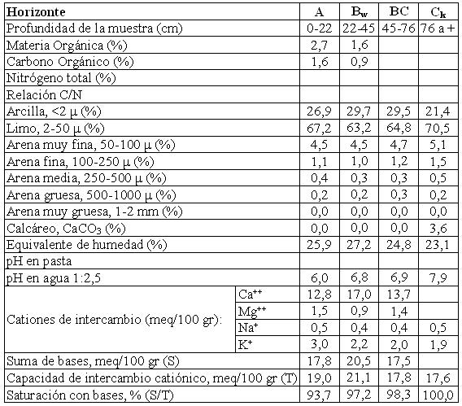

Haplustol típico, limosa fina, mixta, térmica
Capacidad de uso: IIIc
Es un suelo ligeramente desarrollado sobre sedimentos eólicos (loess) en las pendientes regionales de la Pampa Loéssica Alta, el drenaje es moderado, siendo la única limitante significativa la climática. Tiene un horizonte A de 22 cm, franco limoso a franco arcillo limoso y estructura en bloques. Continúa un horizonte subsuperficial con estructura en prismas y bloques débiles (Bw). El material originario con calcáreo diseminado en la masa del suelo se encuentra a 76 cm.
Descripción del perfil típico:
El perfil tipo se encuentra ubicado a 7 km al SO de Candelaria, departamento Totoral, provincia de Córdoba.
A 0-22 cm; color en húmedo pardo oscuro (10YR3/3); franco limoso a franco arcillo limoso; estructura en bloques subangulares medios moderados; friable en húmedo; ligeramente plástico; ligeramente adhesivo; pH 6; raíces muy abundantes; límite inferior claro.
Bw 22-45 cm; color en húmedo pardo oscuro (10YR3/3); franco arcillo limoso a franco limoso; estructura en prismas y bloques débiles; friable en húmedo; ligeramente plástico; ligeramente adhesivo; pH 6,8; barnices escasos a comunes; límite inferior gradual.
BC 45-76 cm; color en húmedo pardo a pardo oscuro (10YR4/3); franco arcillo limoso a franco limoso; estructura en bloques débiles; friable en humado; ligeramente plástico, ligeramente adhesivo; pH 6,9; vestigios de barnices; raíces escasas; límite inferior abrupto.
Ck 76 cm a +; color en húmedo pardo a pardo oscuro (7,5YR4/4); franco limoso; masivo; friable en húmedo; no plástico; no adhesivo; moderada reacción al ácido clorhídrico.
Cuadro Nº9
Datos analíticos Serie CANDELARIA
Ubicación: Latitud 30°54'S Longitud 63°51'O Altitud: 317 m.s.n.m.

|